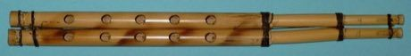

Home / Living Traditions / Mesopotamia, Levant and Arabia
Playable heritage gameMijwiz Double Clarinet
Also known as mijwiz · مجوز
The mijwiz is a pair of short cane pipes, bound side by side, each with a single beating reed and a row of finger holes. The player breathes in through the nose while pushing air out from the cheeks, so the sound never stops, and it carries dance tunes of the Levant.



How to play
- Eight pipes stand in a row, lowest note on the left; the dark discs on each pipe show which finger holes are covered.
- A soft guide line drifts down. Strike a pipe to sound its note over the steady drone, close to the pulse or the half beat.
- Keep playing for the whole round; long guide notes ask you to hold the line without a gap, as a circular breather would.
Rules at a glance
- The scale is a bayati-type mode on D with a half-flat second note, so the second pipe sits between E flat and E.
- A drone on the home note and its fifth sounds throughout, like the second pipe held steady by the player.
- Strokes are scored against the pulse grid, two to a beat: on the grid is a perfect stroke, near it is good, and an extra stroke costs a little.
- The round lasts forty-five seconds; the guide line is a suggestion, not a requirement.
About the tradition
The mijwiz is played in Lebanon, Syria, Palestine and Jordan, where it leads the line dance dabke at weddings and village gatherings and gives its name to a well-known song. Skilled players learn circular breathing so the tune can run for minutes without a pause.
Origins
A living tradition passed from person to person; it is not tied to a single dated origin. It belongs to the cultural world of Mesopotamia, Levant and Arabia.
Credits
- Tune patterns: World Heritage Games (original teaching patterns)
- Photo: Sönke Kraft aka Arnulf zu Linden, CC BY-SA 3.0, source on Wikimedia Commons
- Text: CC BY-SA 4.0, World Heritage Games.
Sources

Get the app
Mijwiz Double Clarinet is coming to the App Store and Google Play. One app, many traditions, no account needed.
Included in Music & Dance: Cueca & Dizi
More games to play


Buzuq Long-Neck Lute
Lebanon +2 · Musical instrumentsPlay preview · in the String Music of the World app
More from Lebanon


Phoenician Alphabet Trader
Lebanon · Puzzles and mind games